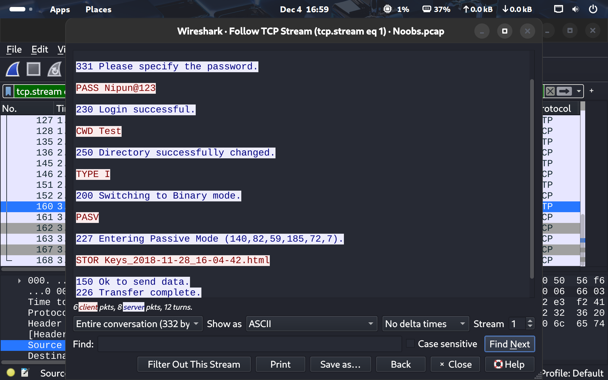
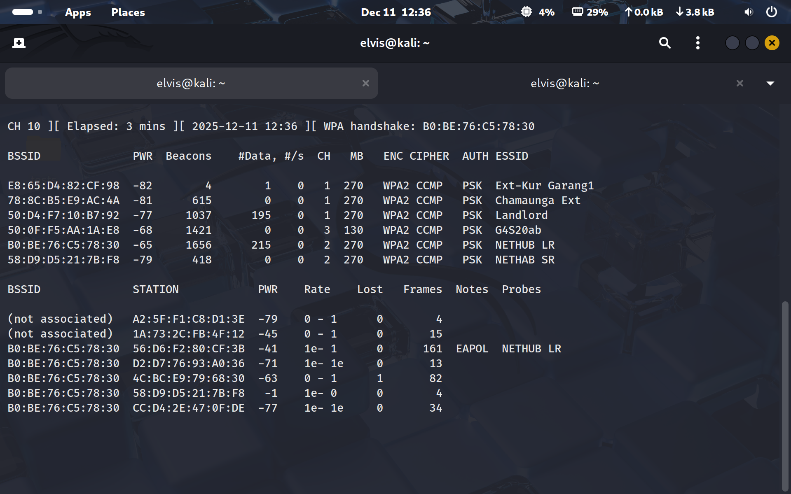
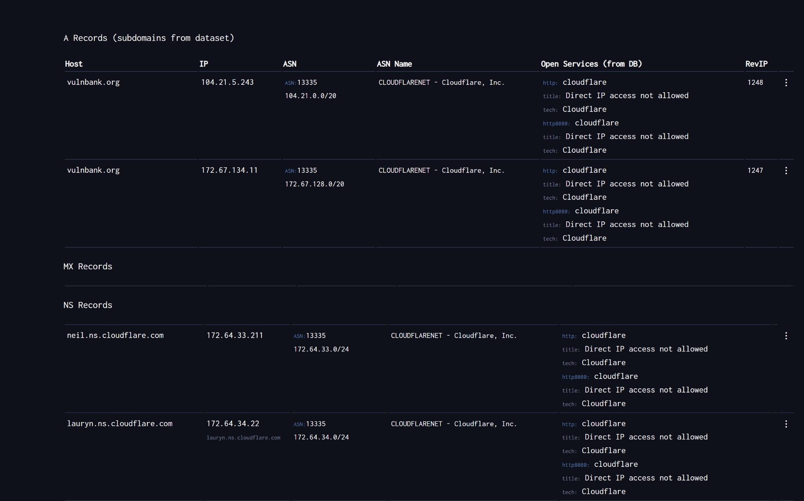
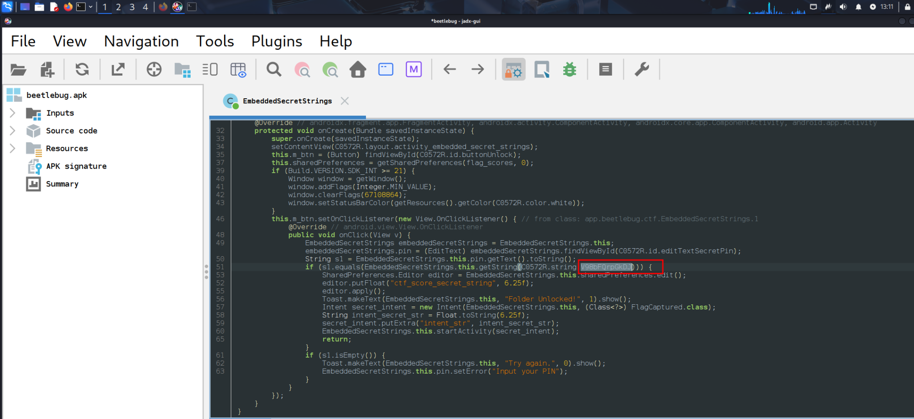
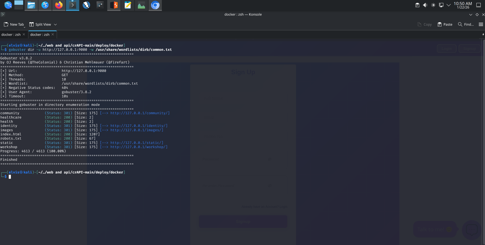
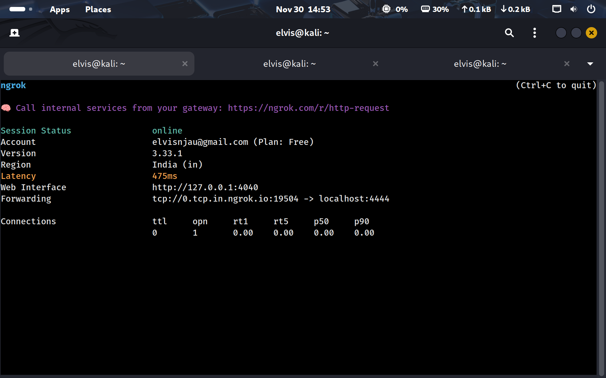
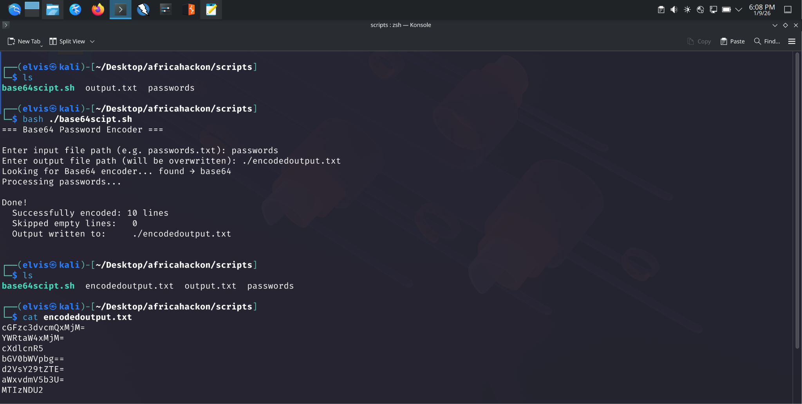

Engineer resilient defenses
Design layered controls, segmented environments, and dependable telemetry that reduce risk across infrastructure, endpoints, networks, applications, and cloud platforms.
Results-driven cybersecurity engineer focused on blue-team defense, alert investigation, threat hunting, incident response, and detection engineering. I combine hands-on security labs with years of cybersecurity experience.
Design layered controls, segmented environments, and dependable telemetry that reduce risk across infrastructure, endpoints, networks, applications, and cloud platforms.
Guide investigations, validate threats and vulnerabilities, and translate technical evidence into prioritized remediation and clear direction for stakeholders.
Automate repeatable workflows, improve detection and response playbooks, mentor technical teams, and turn operational lessons into stronger controls.
Technical capability
Hands-on experience across monitoring, investigation, testing, automation, infrastructure, and security frameworks.
SOC workflows, alert triage, incident classification, false-positive reduction, IOC correlation, Cyber Kill Chain analysis, and MITRE ATT&CK mapping.
Packet analysis, IDS/IPS rule authoring, wireless assessment, MITM detection, and investigation of suspicious network activity.
Endpoint monitoring, forensic collection, disk and memory analysis, malware triage, response playbooks, and evidence preservation.
OWASP-aligned web, API, and Android testing across authorization, authentication, injection, transport, storage, and client-side controls.
Passive and active discovery for target profiling, subdomain enumeration, DNS analysis, and attack-surface mapping.
Security scripts, log parsing, IOC detection, API integrations, alert enrichment, ticketing pipelines, and repeatable analyst workflows.
AWS security reviews, IAM and S3 misconfiguration analysis, CloudTrail review, risk assessment, policies, and framework-based gap analysis.
Controlled Windows and Active Directory exercises, privilege escalation, post-exploitation, and detection validation in authorized labs.
Selected evidence
Every project below is published on GitHub and includes the full lab report with readable technical evidence.

01 / 11Network Security · 9 evidence images
Investigated keylogger exfiltration in packet traffic and created Snort rules for ICMP and Nmap SYN-scan detection.
View detailed case study 02 / 11
02 / 11
Reconnaissance · 7 evidence images
Used multiple passive and active reconnaissance methods to enumerate subdomains, distinguish live from inactive assets, and inspect perimeter protections.
View detailed case study 03 / 11
03 / 11
Scripting · 3 evidence images
Automated subdomain discovery and live-host probing by orchestrating Subfinder and httpx from a reusable Python command-line workflow.
View detailed case study
04 / 11Network Security · 16 evidence images
Completed nine controlled wireless-security labs spanning discovery, WPA/WPA2 handshake capture, password auditing, rogue access points, WPS testing, MITM analysis, and automated assessment.
View detailed case study 05 / 11
05 / 11
Web & Mobile Application Security · 20 evidence images
Executed a structured security assessment against a local OWASP crAPI deployment and translated technical proof into prioritized, business-readable findings.
View detailed case study
06 / 11Web & Mobile Application Security · 23 evidence images
Assessed a banking training environment across web, API, and Android surfaces, documenting fourteen security issues with ordered proof and remediation guidance.
View detailed case study
07 / 11Web & Mobile Application Security · 18 evidence images
Performed a controlled Android application assessment using static analysis, ADB-driven dynamic testing, storage inspection, and backend validation to identify eight security weaknesses.
View detailed case study
08 / 11Web & Mobile Application Security · 20 evidence images
Validated OWASP-aligned weaknesses in a local crAPI environment, preserving request/response evidence across authorization, authentication, rate limiting, injection, and security configuration.
View detailed case study
09 / 11Endpoint Security · 5 evidence images
Completed a controlled four-stage Windows exploitation exercise using a tunnel, a generated reverse TCP payload, a Metasploit handler, and a verified remote shell.
View detailed case study
10 / 11Scripting · 2 evidence images
Built and tested a portable Bash workflow that reads password entries, skips blank lines, selects a working Base64 implementation, and writes ordered results with explicit failure handling.
View detailed case study 11 / 11
11 / 11
Engineering · 8 evidence images
Implemented and tested a Flask API that connects to a MySQL student-records database and supports create, read, update, and delete operations.
View detailed case studyProfessional foundation
Mexil Tech Consultancy Limited
ImpactUnified 5 security platforms, 3 telemetry-source categories, and 2 network detection engines into one repeatable detection and triage workflow.
Mexil Tech Consultancy Limited
ImpactAutomated 4 recurring security workflow categories and extended control coverage across Windows, Linux, network, and governance environments.
Kendas Hotels Limited
ImpactDirected technology operations across 5 business-critical domains and formalized 3 resilience controls: monitoring, incident escalation, and recovery playbooks.
Kendas Hotels Limited
ImpactSupported 4 infrastructure layers and standardized 5 core administration controls across patching, identity, endpoints, backups, and configuration management.
Continuous learning
AfricaHackon
TryHackMe
Google / Coursera
What I'm looking for
I am seeking a senior cybersecurity engineering opportunity where I can design resilient security controls, improve detection and response capabilities, guide technical investigations, and reduce risk across infrastructure, endpoints, networks, applications, and cloud environments.
Let's connect
Nairobi, Kenya · Open to remote and on-site SOC analyst roles